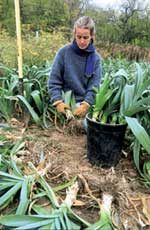

David Cavagnaro
Trim back the tops and knock the dirt off of freshly harvested leeks, and then pack as many as you can fit into large pots, repacking the soil around the roots as you fill the pots.Water thoroughly, le drain and store in the cold-and-moist section of your root cellar.